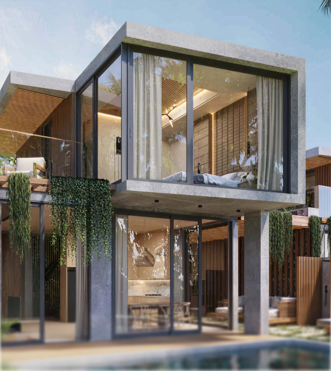
VillaS1
Villa S1
- Beds
- 1
- Baths
- 1
- Living space
- 80.83 m²
Ocean view · Forest view · BBQ area
Open live catalog ↗
Case 04 · Real estate · Bali
A responsive property experience combining cinematic storytelling, detailed discovery and an interactive masterplan.
01 / Challenge
The website had to sell a destination and still function as a practical property-selection tool.
I designed the information structure, UX, filtering logic and visual experience across desktop and mobile. Copywriting was outside my scope. The key design problem was balancing immersive storytelling with a large inventory of apartments, villas and detailed property attributes.
02 / Desktop & motion
Large typography, pinned scenes and spatial transitions build desire before the interface shifts into property discovery. The case isolates the strongest motion moment instead of reproducing the complete website.
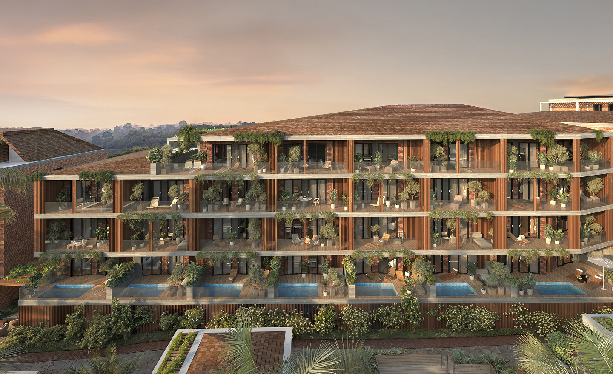
01Layered type transitions
02Scroll-pinned scenes
03Depth through scale and parallax
03 / Discovery logic
One journey connects the destination, masterplan and individual units.
Interactive masterplan
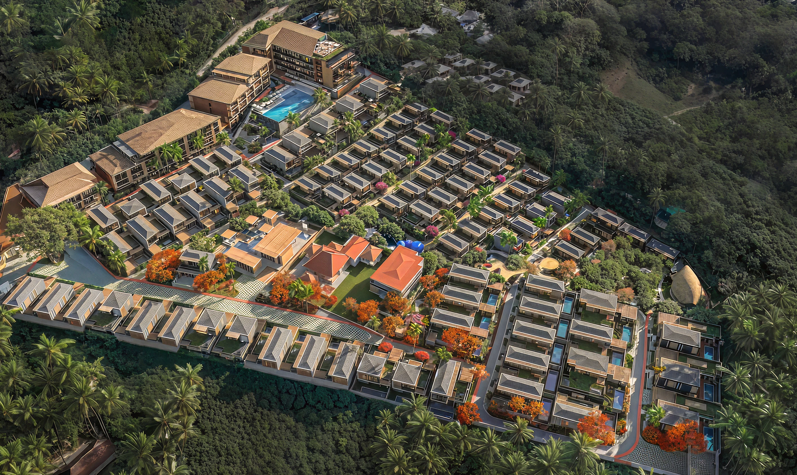

VillaS1
Ocean view · Forest view · BBQ area
Open live catalog ↗Click a marker to switch the selected property
04 / Desktop catalog
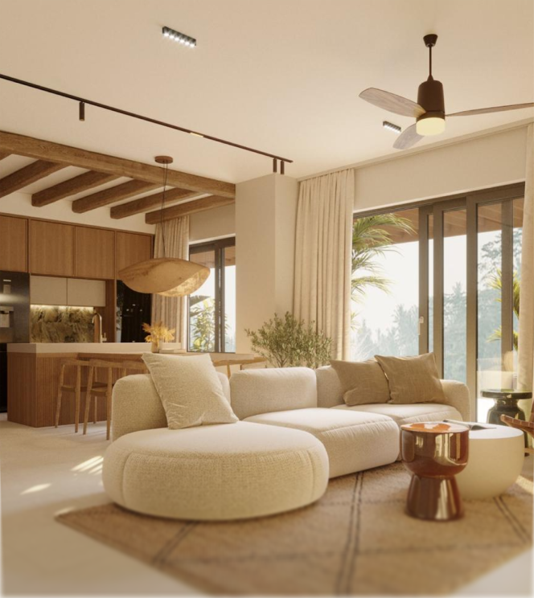
Apartment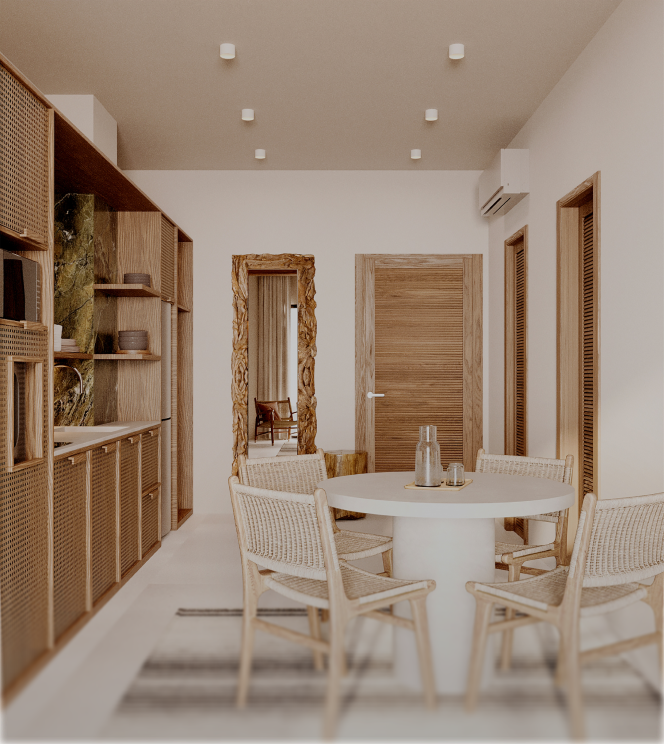
Apartment05 / Mobile product flow
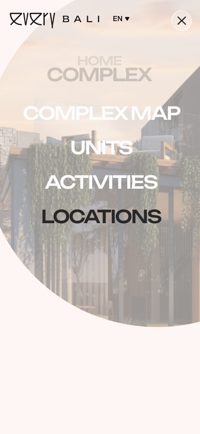
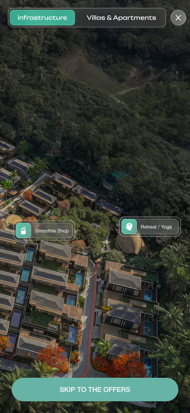
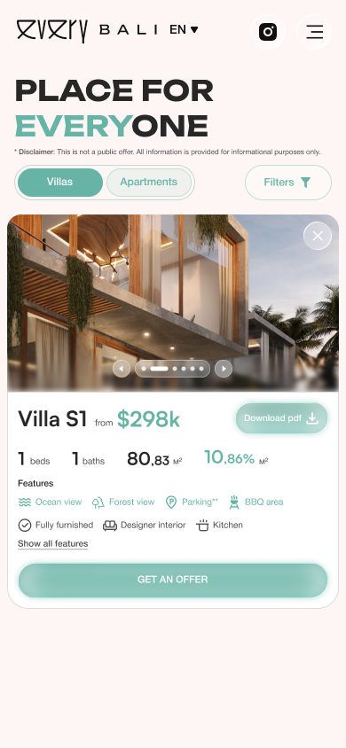
06 / Ownership & decisions
I owned the experience from information structure to the final visual system.
My scope covered information architecture, UX flows, art direction, visual design, responsive behavior, the masterplan, catalog, filters and unit-detail experience. Copywriting was outside my scope.
The opening establishes place and aspiration before asking users to compare property attributes.
The masterplan connects the physical development with catalog logic, infrastructure and available unit types.
Story, filters, cards and unit details were reorganized for mobile instead of being compressed from desktop.
07 / Rebuild
After launch the opening screen was replaced. Instead of a fixed hero image, the page now starts with an infinite plane of project renders that the visitor drags through — the first interaction is exploration, before a single line of copy is read. The brand line sits over it: Your rhythm. Your rules. Your surroundings.
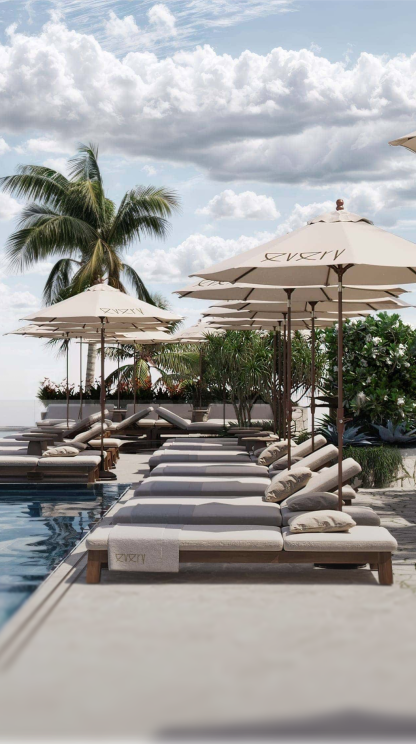
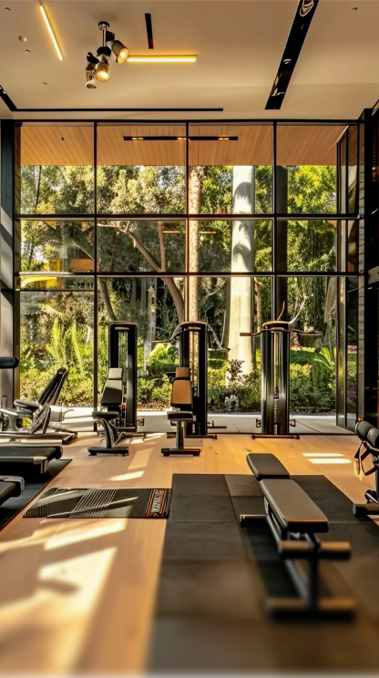
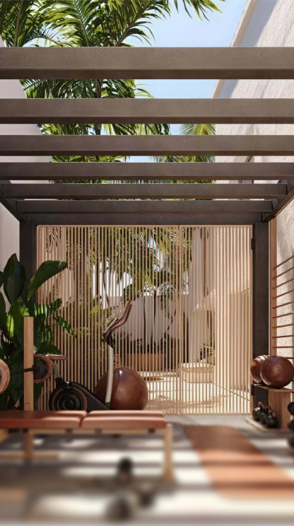
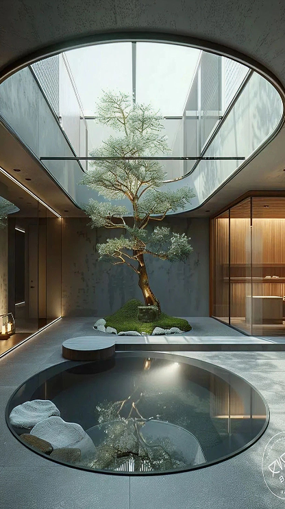
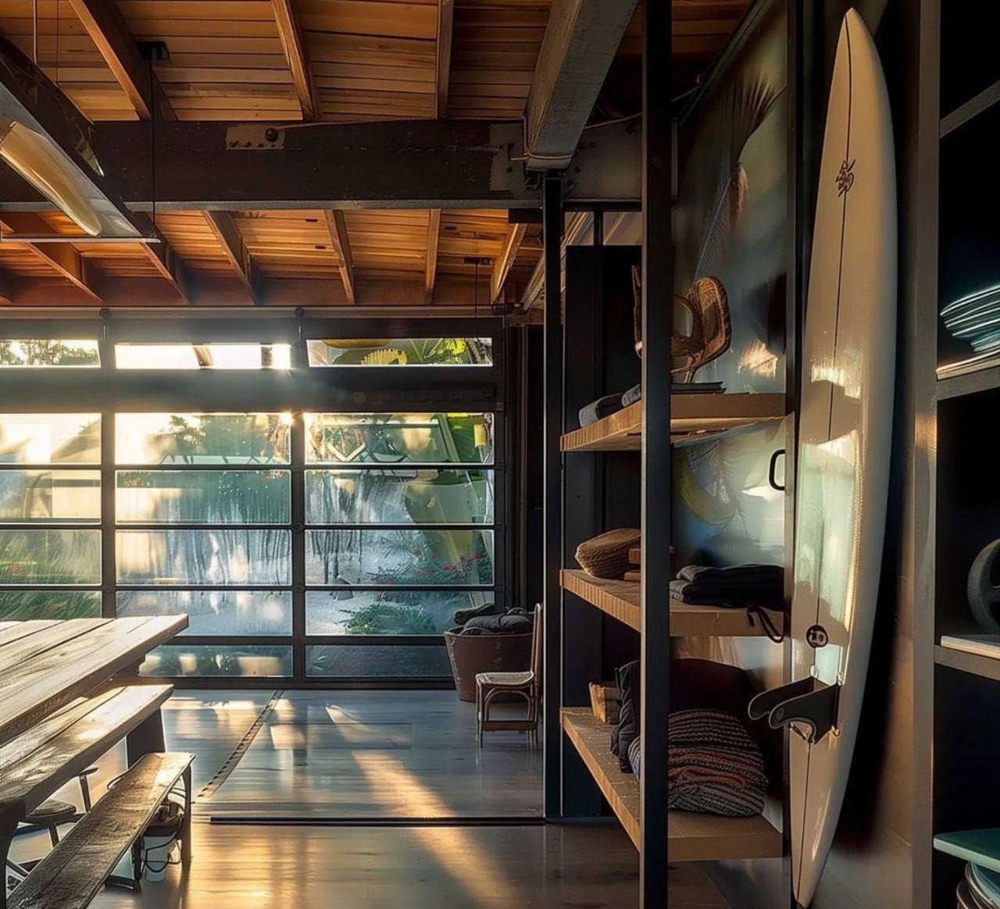
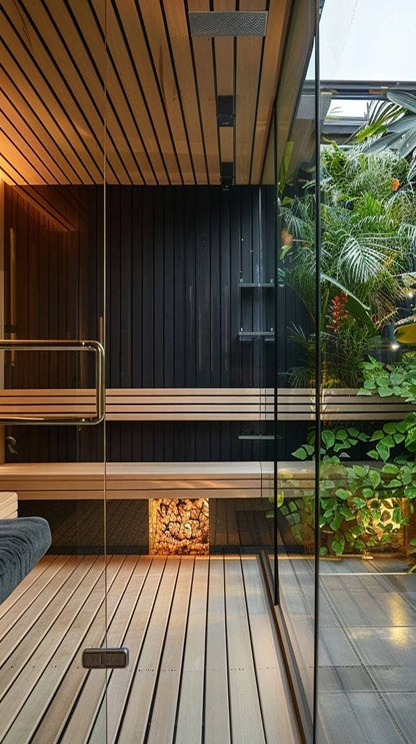
01Drag replaces scroll as the first gesture
02Reduced-motion visitors get a still composition
03Advantages, community and activities reworked below the fold
08 / Unit ROI
Investment interest kept arriving as the same question — what does this unit actually return? The project now ships a per-unit ROI tool: choose the apartment, the payment plan and the scenario, and the model answers with rental income year by year and the exit position if the rights are assigned instead.
Open the calculator ↗Apt A-1 · 1 bedroom · 44.2 m² · 18-month plan · realistic scenario
Net rental, year 1$19,945
Assignment price, year 5$264,112
Net proceeds after tax$245,090
09 / Launch
The complete English-language website is live and in use.
The launched product includes immersive sections, an interactive masterplan, a substantial property catalog, filtering, unit information, infrastructure content and construction-progress material. My authorship covers structure, UX, filtering logic and visual design.
Next case
Aleria↗